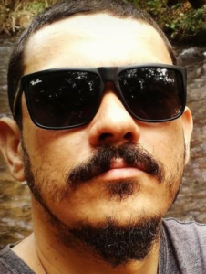

Fernando Mendes Oliveira

Brasileiro, nascido em 23 de Março de 1983 | Rua Orozimbo Correia Neto, 366, Olegario Pinto, Caldas Novas/GO
fernando.quimic@gmail.com | (64)99305-7602 | LinkedIn
| GitHub
OBJETIVO
Oferecer serviços e soluções na área de T.I., desenvolvimento de softwares
e ferramentas, agregando à equipe experiências profissionais anteriores e
skills adquiridas, atuando com ética e comprometimento com o melhor resultado,
visando a satisfação da empresa e seus clientes.
EXPERIÊNCIA PROFISSIONAL
- ROCHA MODA PRAIA - Março de 2018 até o momento
- Atuo como Estampador Têxtil. Realizo o tingimento de tecidos usando
a técnica de sublimação. Desenvolvi e apliquei técnicas de melhoria
dos processos e diminuição de manchas e problemas de qualidade,
assim como procedimentos e algoritmos que diminuiram o tempo de
funcionamento das máquinas envolvidas na estampagem. Estou
desenvolvendo a documentação dos processos, através de textos e
fluxogramas para deixar registrado aos próximos colaboradores e
como um guia de melhoria das técnicas e desenvolvimento futuro dos
processos.
- WD LOGÍSTICA E DISTRIBUIÇÃO - Junho de 2009 até dezembro de 2011
- Atuava como Auxiliar de Logística. Realizava a gestão de um estoque
físico de cartões telefônicos e chips e virtual de recargas para
celulares, via PDV, para a operadora Oi(extinta BRT Telecom) e
distribuia o estoque físico entre 10 vendedores espalhados por
diferentes cidades do Sul goiano e o virtual através de um sistema
integrado com os sitemas da operadora. Realizava periodicamente a
conferência dos estoques dos vendedores e filial, gerando relatórios
enviados para a supervisão do departamento, criava gráficos e apontadores
de vendas para o acompanhamento da equipe.
- REDE ELETROSOM - Setembro de 2006 até Maio de 2009
- Atuava como conferente de carga e descarga no depósito principal de
distribuição. Como conferente de carga, listava e baixava no sistema,
mercadorias que eram carregadas no caminhão, após esse proceso, era
gerada a nota fiscal das cargas pelo departamento responsável.
Como conferente de descarga, organizava, junto com minha equipe, o
local de armazenamento da mercadoria, efetuava a contagem e conferência
das mercadorias do romaneio e após esse processo, finalizava liberando
ou não o fornecedor.
FORMAÇÃO
- UNIVERSIDADE ESTÁCIO DE SÁ - SOCIEDADE DE ENSINO SUPERIOR ESTÁCIO DE SÁ LTDA (Caldas Novas/GO)
- Tecnólogo em Análise e Desenvolvimento de Sistemas - Outubro 2021 - Cursando
INFORMAÇÕES ADICIONAIS
- CURSOS COMPLEMENTARES
- HTML 5 e CSS - Udemy - Dezembro 2021
- Empregabilidade e Carreira - Instituto Conhecimento Liberta - Novembro 2021
- Linguagem de Programação C - Udemy - Agosto 2020
- Microsoft Office 2007 - Compuway Caldas Novas - Novembro 2009
- Linguagem de Programação C++ - Udemy - Cursando
- Linguagem de Programação Python 3 do Básico ao Avançado - Udemy - Cursando
- Inglês - Instituto Conhecimento Liberta - Cursando
- OUTRAS INFORMAÇÕES
- CNH categoria "AB"